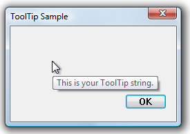

The following example demonstrates how to create a standard tooltip control for a window's entire client area.
The following illustration shows the tooltip that is displayed when the mouse pointer is within the client window of a dialog box. The handle of the dialog box was passed to the function shown in the preceding example.

The following example demonstrates how to create a standard tooltip control for a window's entire client area.
void CreateToolTipForRect(HWND hwndParent)
{
// Create a tooltip.
HWND hwndTT = CreateWindowEx(WS_EX_TOPMOST, TOOLTIPS_CLASS, NULL,
WS_POPUP | TTS_NOPREFIX | TTS_ALWAYSTIP,
CW_USEDEFAULT, CW_USEDEFAULT, CW_USEDEFAULT, CW_USEDEFAULT,
hwndParent, NULL, g_hInst,NULL);
SetWindowPos(hwndTT, HWND_TOPMOST, 0, 0, 0, 0,
SWP_NOMOVE | SWP_NOSIZE | SWP_NOACTIVATE);
// Set up "tool" information. In this case, the "tool" is the entire parent window.
TOOLINFO ti = { 0 };
ti.cbSize = sizeof(TOOLINFO);
ti.uFlags = TTF_SUBCLASS;
ti.hwnd = hwndParent;
ti.hinst = g_hInst;
ti.lpszText = TEXT("This is your tooltip string.");
GetClientRect (hwndParent, &ti.rect);
// Associate the tooltip with the "tool" window.
SendMessage(hwndTT, TTM_ADDTOOL, 0, (LPARAM) (LPTOOLINFO) &ti);
}
Â
Â